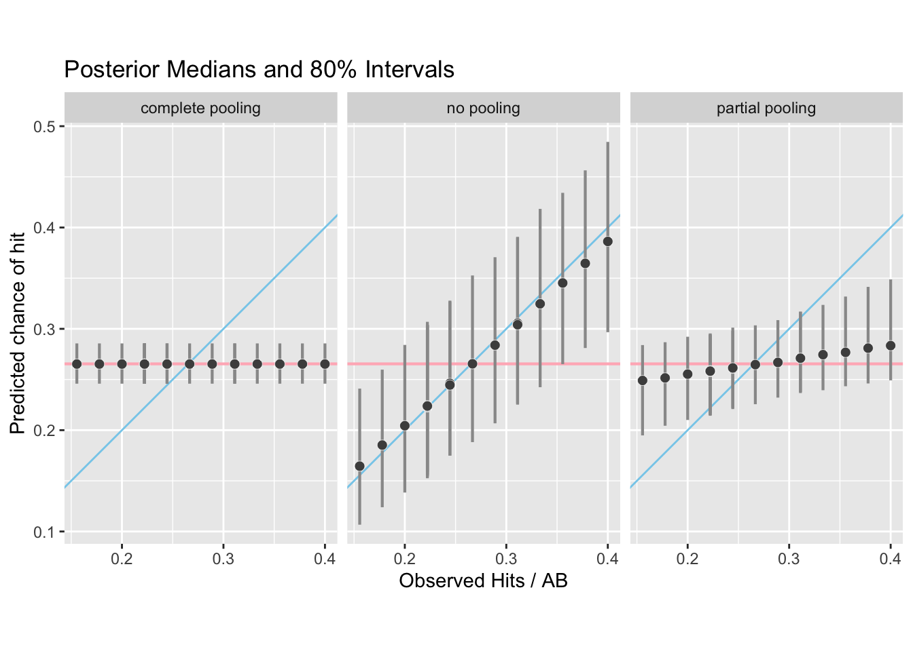

15 Example 2: James-Stein Baseball
Example 15.1 (James-Stein baseball) See this vignette for more details of this example. The James-Stein baseball data10 is analyzed using stan_glm in the rstanarm package. This includes model fits with complete pooling (constant-risk model), no pooling (independent-parameter model), and partial pooling (hierarchical model).
library(rstanarm)
Loading required package: Rcpp
This is rstanarm version 2.21.3
- See https://mc-stan.org/rstanarm/articles/priors for changes to default priors!
- Default priors may change, so it's safest to specify priors, even if equivalent to the defaults.
- For execution on a local, multicore CPU with excess RAM we recommend calling
options(mc.cores = parallel::detectCores())
data(bball1970)
bball <- bball1970
# xtable(bball)
kbl(bball) %>%
kable_classic_2(full_width = F)| Player | AB | Hits | RemainingAB | RemainingHits |
|---|---|---|---|---|
| Clemente | 45 | 18 | 367 | 127 |
| Robinson | 45 | 17 | 426 | 127 |
| Howard | 45 | 16 | 521 | 144 |
| Johnstone | 45 | 15 | 275 | 61 |
| Berry | 45 | 14 | 418 | 114 |
| Spencer | 45 | 14 | 466 | 126 |
| Kessinger | 45 | 13 | 586 | 155 |
| Alvarado | 45 | 12 | 138 | 29 |
| Santo | 45 | 11 | 510 | 137 |
| Swaboda | 45 | 11 | 200 | 46 |
| Petrocelli | 45 | 10 | 538 | 142 |
| Rodriguez | 45 | 10 | 186 | 42 |
| Scott | 45 | 10 | 435 | 132 |
| Unser | 45 | 10 | 277 | 73 |
| Williams | 45 | 10 | 591 | 195 |
| Campaneris | 45 | 9 | 558 | 159 |
| Munson | 45 | 8 | 408 | 129 |
| Alvis | 45 | 7 | 70 | 14 |
N <- nrow(bball)
K <- bball$AB
y <- bball$Hits
K_new <- bball$RemainingAB
y_new <- bball$RemainingHits
batting_avg <- function(x) print(format(round(x, digits = 3),
nsmall = 3), quote = FALSE)
player_avgs <- y/K # player avgs through 45 AB
tot_avg <- sum(y)/sum(K) # overall avg through 45 AB
cat("Player averages through 45 at-bats:\n")
Player averages through 45 at-bats:
batting_avg(player_avgs)
[1] 0.400 0.378 0.356 0.333 0.311 0.311 0.289 0.267 0.244
[10] 0.244 0.222 0.222 0.222 0.222 0.222 0.200 0.178 0.156
cat("Overall average through 45 at-bats:\n")
Overall average through 45 at-bats:
batting_avg(tot_avg)
[1] 0.26515.1 Complete pooling
SEED <- 202
wi_prior <- normal(-1, 1) # weakly informative prior on log-odds
fit_pool <- stan_glm(cbind(Hits, AB - Hits) ~ 1, data = bball, family = binomial("logit"),
prior_intercept = wi_prior, seed = SEED)
SAMPLING FOR MODEL 'binomial' NOW (CHAIN 1).
Chain 1:
Chain 1: Gradient evaluation took 2.2e-05 seconds
Chain 1: 1000 transitions using 10 leapfrog steps per transition would take 0.22 seconds.
Chain 1: Adjust your expectations accordingly!
Chain 1:
Chain 1:
Chain 1: Iteration: 1 / 2000 [ 0%] (Warmup)
Chain 1: Iteration: 200 / 2000 [ 10%] (Warmup)
Chain 1: Iteration: 400 / 2000 [ 20%] (Warmup)
Chain 1: Iteration: 600 / 2000 [ 30%] (Warmup)
Chain 1: Iteration: 800 / 2000 [ 40%] (Warmup)
Chain 1: Iteration: 1000 / 2000 [ 50%] (Warmup)
Chain 1: Iteration: 1001 / 2000 [ 50%] (Sampling)
Chain 1: Iteration: 1200 / 2000 [ 60%] (Sampling)
Chain 1: Iteration: 1400 / 2000 [ 70%] (Sampling)
Chain 1: Iteration: 1600 / 2000 [ 80%] (Sampling)
Chain 1: Iteration: 1800 / 2000 [ 90%] (Sampling)
Chain 1: Iteration: 2000 / 2000 [100%] (Sampling)
Chain 1:
Chain 1: Elapsed Time: 0.015257 seconds (Warm-up)
Chain 1: 0.018122 seconds (Sampling)
Chain 1: 0.033379 seconds (Total)
Chain 1:
SAMPLING FOR MODEL 'binomial' NOW (CHAIN 2).
Chain 2:
Chain 2: Gradient evaluation took 5e-06 seconds
Chain 2: 1000 transitions using 10 leapfrog steps per transition would take 0.05 seconds.
Chain 2: Adjust your expectations accordingly!
Chain 2:
Chain 2:
Chain 2: Iteration: 1 / 2000 [ 0%] (Warmup)
Chain 2: Iteration: 200 / 2000 [ 10%] (Warmup)
Chain 2: Iteration: 400 / 2000 [ 20%] (Warmup)
Chain 2: Iteration: 600 / 2000 [ 30%] (Warmup)
Chain 2: Iteration: 800 / 2000 [ 40%] (Warmup)
Chain 2: Iteration: 1000 / 2000 [ 50%] (Warmup)
Chain 2: Iteration: 1001 / 2000 [ 50%] (Sampling)
Chain 2: Iteration: 1200 / 2000 [ 60%] (Sampling)
Chain 2: Iteration: 1400 / 2000 [ 70%] (Sampling)
Chain 2: Iteration: 1600 / 2000 [ 80%] (Sampling)
Chain 2: Iteration: 1800 / 2000 [ 90%] (Sampling)
Chain 2: Iteration: 2000 / 2000 [100%] (Sampling)
Chain 2:
Chain 2: Elapsed Time: 0.015807 seconds (Warm-up)
Chain 2: 0.017317 seconds (Sampling)
Chain 2: 0.033124 seconds (Total)
Chain 2:
SAMPLING FOR MODEL 'binomial' NOW (CHAIN 3).
Chain 3:
Chain 3: Gradient evaluation took 1.1e-05 seconds
Chain 3: 1000 transitions using 10 leapfrog steps per transition would take 0.11 seconds.
Chain 3: Adjust your expectations accordingly!
Chain 3:
Chain 3:
Chain 3: Iteration: 1 / 2000 [ 0%] (Warmup)
Chain 3: Iteration: 200 / 2000 [ 10%] (Warmup)
Chain 3: Iteration: 400 / 2000 [ 20%] (Warmup)
Chain 3: Iteration: 600 / 2000 [ 30%] (Warmup)
Chain 3: Iteration: 800 / 2000 [ 40%] (Warmup)
Chain 3: Iteration: 1000 / 2000 [ 50%] (Warmup)
Chain 3: Iteration: 1001 / 2000 [ 50%] (Sampling)
Chain 3: Iteration: 1200 / 2000 [ 60%] (Sampling)
Chain 3: Iteration: 1400 / 2000 [ 70%] (Sampling)
Chain 3: Iteration: 1600 / 2000 [ 80%] (Sampling)
Chain 3: Iteration: 1800 / 2000 [ 90%] (Sampling)
Chain 3: Iteration: 2000 / 2000 [100%] (Sampling)
Chain 3:
Chain 3: Elapsed Time: 0.015199 seconds (Warm-up)
Chain 3: 0.018457 seconds (Sampling)
Chain 3: 0.033656 seconds (Total)
Chain 3:
SAMPLING FOR MODEL 'binomial' NOW (CHAIN 4).
Chain 4:
Chain 4: Gradient evaluation took 4e-06 seconds
Chain 4: 1000 transitions using 10 leapfrog steps per transition would take 0.04 seconds.
Chain 4: Adjust your expectations accordingly!
Chain 4:
Chain 4:
Chain 4: Iteration: 1 / 2000 [ 0%] (Warmup)
Chain 4: Iteration: 200 / 2000 [ 10%] (Warmup)
Chain 4: Iteration: 400 / 2000 [ 20%] (Warmup)
Chain 4: Iteration: 600 / 2000 [ 30%] (Warmup)
Chain 4: Iteration: 800 / 2000 [ 40%] (Warmup)
Chain 4: Iteration: 1000 / 2000 [ 50%] (Warmup)
Chain 4: Iteration: 1001 / 2000 [ 50%] (Sampling)
Chain 4: Iteration: 1200 / 2000 [ 60%] (Sampling)
Chain 4: Iteration: 1400 / 2000 [ 70%] (Sampling)
Chain 4: Iteration: 1600 / 2000 [ 80%] (Sampling)
Chain 4: Iteration: 1800 / 2000 [ 90%] (Sampling)
Chain 4: Iteration: 2000 / 2000 [100%] (Sampling)
Chain 4:
Chain 4: Elapsed Time: 0.01666 seconds (Warm-up)
Chain 4: 0.018921 seconds (Sampling)
Chain 4: 0.035581 seconds (Total)
Chain 4:
invlogit <- plogis # function(x) 1/(1 + exp(-x))
summary_stats <- function(posterior) {
x <- invlogit(posterior) # log-odds -> probabilities
t(apply(x, 2, quantile, probs = c(0.1, 0.5, 0.9)))
}
pool <- summary_stats(as.matrix(fit_pool)) # as.matrix extracts the posterior draws
pool <- matrix(pool, # replicate to give each player the same estimates
nrow(bball), ncol(pool), byrow = TRUE,
dimnames = list(bball$Player, c("10%", "50%", "90%")))
batting_avg(pool)
10% 50% 90%
Clemente 0.246 0.265 0.286
Robinson 0.246 0.265 0.286
Howard 0.246 0.265 0.286
Johnstone 0.246 0.265 0.286
Berry 0.246 0.265 0.286
Spencer 0.246 0.265 0.286
Kessinger 0.246 0.265 0.286
Alvarado 0.246 0.265 0.286
Santo 0.246 0.265 0.286
Swaboda 0.246 0.265 0.286
Petrocelli 0.246 0.265 0.286
Rodriguez 0.246 0.265 0.286
Scott 0.246 0.265 0.286
Unser 0.246 0.265 0.286
Williams 0.246 0.265 0.286
Campaneris 0.246 0.265 0.286
Munson 0.246 0.265 0.286
Alvis 0.246 0.265 0.286
invlogit <- plogis # function(x) 1/(1 + exp(-x))
summary_stats <- function(posterior) {
x <- invlogit(posterior) # log-odds -> probabilities
t(apply(x, 2, quantile, probs = c(0.1, 0.5, 0.9)))
}
pool <- summary_stats(as.matrix(fit_pool)) # as.matrix extracts the posterior draws
pool <- matrix(pool, # replicate to give each player the same estimates
nrow(bball), ncol(pool), byrow = TRUE,
dimnames = list(bball$Player, c("10%", "50%", "90%")))
batting_avg(pool)
10% 50% 90%
Clemente 0.246 0.265 0.286
Robinson 0.246 0.265 0.286
Howard 0.246 0.265 0.286
Johnstone 0.246 0.265 0.286
Berry 0.246 0.265 0.286
Spencer 0.246 0.265 0.286
Kessinger 0.246 0.265 0.286
Alvarado 0.246 0.265 0.286
Santo 0.246 0.265 0.286
Swaboda 0.246 0.265 0.286
Petrocelli 0.246 0.265 0.286
Rodriguez 0.246 0.265 0.286
Scott 0.246 0.265 0.286
Unser 0.246 0.265 0.286
Williams 0.246 0.265 0.286
Campaneris 0.246 0.265 0.286
Munson 0.246 0.265 0.286
Alvis 0.246 0.265 0.28615.2 No pooling
fit_nopool <- update(fit_pool, formula = . ~ 0 + Player, prior = wi_prior)
SAMPLING FOR MODEL 'binomial' NOW (CHAIN 1).
Chain 1:
Chain 1: Gradient evaluation took 3.8e-05 seconds
Chain 1: 1000 transitions using 10 leapfrog steps per transition would take 0.38 seconds.
Chain 1: Adjust your expectations accordingly!
Chain 1:
Chain 1:
Chain 1: Iteration: 1 / 2000 [ 0%] (Warmup)
Chain 1: Iteration: 200 / 2000 [ 10%] (Warmup)
Chain 1: Iteration: 400 / 2000 [ 20%] (Warmup)
Chain 1: Iteration: 600 / 2000 [ 30%] (Warmup)
Chain 1: Iteration: 800 / 2000 [ 40%] (Warmup)
Chain 1: Iteration: 1000 / 2000 [ 50%] (Warmup)
Chain 1: Iteration: 1001 / 2000 [ 50%] (Sampling)
Chain 1: Iteration: 1200 / 2000 [ 60%] (Sampling)
Chain 1: Iteration: 1400 / 2000 [ 70%] (Sampling)
Chain 1: Iteration: 1600 / 2000 [ 80%] (Sampling)
Chain 1: Iteration: 1800 / 2000 [ 90%] (Sampling)
Chain 1: Iteration: 2000 / 2000 [100%] (Sampling)
Chain 1:
Chain 1: Elapsed Time: 0.069053 seconds (Warm-up)
Chain 1: 0.080344 seconds (Sampling)
Chain 1: 0.149397 seconds (Total)
Chain 1:
SAMPLING FOR MODEL 'binomial' NOW (CHAIN 2).
Chain 2:
Chain 2: Gradient evaluation took 1.1e-05 seconds
Chain 2: 1000 transitions using 10 leapfrog steps per transition would take 0.11 seconds.
Chain 2: Adjust your expectations accordingly!
Chain 2:
Chain 2:
Chain 2: Iteration: 1 / 2000 [ 0%] (Warmup)
Chain 2: Iteration: 200 / 2000 [ 10%] (Warmup)
Chain 2: Iteration: 400 / 2000 [ 20%] (Warmup)
Chain 2: Iteration: 600 / 2000 [ 30%] (Warmup)
Chain 2: Iteration: 800 / 2000 [ 40%] (Warmup)
Chain 2: Iteration: 1000 / 2000 [ 50%] (Warmup)
Chain 2: Iteration: 1001 / 2000 [ 50%] (Sampling)
Chain 2: Iteration: 1200 / 2000 [ 60%] (Sampling)
Chain 2: Iteration: 1400 / 2000 [ 70%] (Sampling)
Chain 2: Iteration: 1600 / 2000 [ 80%] (Sampling)
Chain 2: Iteration: 1800 / 2000 [ 90%] (Sampling)
Chain 2: Iteration: 2000 / 2000 [100%] (Sampling)
Chain 2:
Chain 2: Elapsed Time: 0.067713 seconds (Warm-up)
Chain 2: 0.076083 seconds (Sampling)
Chain 2: 0.143796 seconds (Total)
Chain 2:
SAMPLING FOR MODEL 'binomial' NOW (CHAIN 3).
Chain 3:
Chain 3: Gradient evaluation took 8e-06 seconds
Chain 3: 1000 transitions using 10 leapfrog steps per transition would take 0.08 seconds.
Chain 3: Adjust your expectations accordingly!
Chain 3:
Chain 3:
Chain 3: Iteration: 1 / 2000 [ 0%] (Warmup)
Chain 3: Iteration: 200 / 2000 [ 10%] (Warmup)
Chain 3: Iteration: 400 / 2000 [ 20%] (Warmup)
Chain 3: Iteration: 600 / 2000 [ 30%] (Warmup)
Chain 3: Iteration: 800 / 2000 [ 40%] (Warmup)
Chain 3: Iteration: 1000 / 2000 [ 50%] (Warmup)
Chain 3: Iteration: 1001 / 2000 [ 50%] (Sampling)
Chain 3: Iteration: 1200 / 2000 [ 60%] (Sampling)
Chain 3: Iteration: 1400 / 2000 [ 70%] (Sampling)
Chain 3: Iteration: 1600 / 2000 [ 80%] (Sampling)
Chain 3: Iteration: 1800 / 2000 [ 90%] (Sampling)
Chain 3: Iteration: 2000 / 2000 [100%] (Sampling)
Chain 3:
Chain 3: Elapsed Time: 0.064684 seconds (Warm-up)
Chain 3: 0.074064 seconds (Sampling)
Chain 3: 0.138748 seconds (Total)
Chain 3:
SAMPLING FOR MODEL 'binomial' NOW (CHAIN 4).
Chain 4:
Chain 4: Gradient evaluation took 7e-06 seconds
Chain 4: 1000 transitions using 10 leapfrog steps per transition would take 0.07 seconds.
Chain 4: Adjust your expectations accordingly!
Chain 4:
Chain 4:
Chain 4: Iteration: 1 / 2000 [ 0%] (Warmup)
Chain 4: Iteration: 200 / 2000 [ 10%] (Warmup)
Chain 4: Iteration: 400 / 2000 [ 20%] (Warmup)
Chain 4: Iteration: 600 / 2000 [ 30%] (Warmup)
Chain 4: Iteration: 800 / 2000 [ 40%] (Warmup)
Chain 4: Iteration: 1000 / 2000 [ 50%] (Warmup)
Chain 4: Iteration: 1001 / 2000 [ 50%] (Sampling)
Chain 4: Iteration: 1200 / 2000 [ 60%] (Sampling)
Chain 4: Iteration: 1400 / 2000 [ 70%] (Sampling)
Chain 4: Iteration: 1600 / 2000 [ 80%] (Sampling)
Chain 4: Iteration: 1800 / 2000 [ 90%] (Sampling)
Chain 4: Iteration: 2000 / 2000 [100%] (Sampling)
Chain 4:
Chain 4: Elapsed Time: 0.068065 seconds (Warm-up)
Chain 4: 0.08149 seconds (Sampling)
Chain 4: 0.149555 seconds (Total)
Chain 4:
nopool <- summary_stats(as.matrix(fit_nopool))
rownames(nopool) <- as.character(bball$Player)
batting_avg(nopool)
parameters 10% 50% 90%
Clemente 0.297 0.386 0.484
Robinson 0.281 0.365 0.456
Howard 0.265 0.345 0.434
Johnstone 0.242 0.325 0.418
Berry 0.226 0.306 0.390
Spencer 0.225 0.304 0.391
Kessinger 0.207 0.284 0.371
Alvarado 0.188 0.265 0.353
Santo 0.175 0.246 0.328
Swaboda 0.175 0.245 0.327
Petrocelli 0.154 0.223 0.304
Rodriguez 0.155 0.224 0.303
Scott 0.159 0.223 0.303
Unser 0.153 0.224 0.307
Williams 0.156 0.224 0.304
Campaneris 0.138 0.204 0.284
Munson 0.124 0.185 0.260
Alvis 0.107 0.164 0.24115.3 Partial pooling
fit_partialpool <- stan_glmer(cbind(Hits, AB - Hits) ~ (1 | Player),
data = bball, family = binomial("logit"), prior_intercept = wi_prior,
seed = SEED)
SAMPLING FOR MODEL 'binomial' NOW (CHAIN 1).
Chain 1:
Chain 1: Gradient evaluation took 2.7e-05 seconds
Chain 1: 1000 transitions using 10 leapfrog steps per transition would take 0.27 seconds.
Chain 1: Adjust your expectations accordingly!
Chain 1:
Chain 1:
Chain 1: Iteration: 1 / 2000 [ 0%] (Warmup)
Chain 1: Iteration: 200 / 2000 [ 10%] (Warmup)
Chain 1: Iteration: 400 / 2000 [ 20%] (Warmup)
Chain 1: Iteration: 600 / 2000 [ 30%] (Warmup)
Chain 1: Iteration: 800 / 2000 [ 40%] (Warmup)
Chain 1: Iteration: 1000 / 2000 [ 50%] (Warmup)
Chain 1: Iteration: 1001 / 2000 [ 50%] (Sampling)
Chain 1: Iteration: 1200 / 2000 [ 60%] (Sampling)
Chain 1: Iteration: 1400 / 2000 [ 70%] (Sampling)
Chain 1: Iteration: 1600 / 2000 [ 80%] (Sampling)
Chain 1: Iteration: 1800 / 2000 [ 90%] (Sampling)
Chain 1: Iteration: 2000 / 2000 [100%] (Sampling)
Chain 1:
Chain 1: Elapsed Time: 0.119321 seconds (Warm-up)
Chain 1: 0.125259 seconds (Sampling)
Chain 1: 0.24458 seconds (Total)
Chain 1:
SAMPLING FOR MODEL 'binomial' NOW (CHAIN 2).
Chain 2:
Chain 2: Gradient evaluation took 9e-06 seconds
Chain 2: 1000 transitions using 10 leapfrog steps per transition would take 0.09 seconds.
Chain 2: Adjust your expectations accordingly!
Chain 2:
Chain 2:
Chain 2: Iteration: 1 / 2000 [ 0%] (Warmup)
Chain 2: Iteration: 200 / 2000 [ 10%] (Warmup)
Chain 2: Iteration: 400 / 2000 [ 20%] (Warmup)
Chain 2: Iteration: 600 / 2000 [ 30%] (Warmup)
Chain 2: Iteration: 800 / 2000 [ 40%] (Warmup)
Chain 2: Iteration: 1000 / 2000 [ 50%] (Warmup)
Chain 2: Iteration: 1001 / 2000 [ 50%] (Sampling)
Chain 2: Iteration: 1200 / 2000 [ 60%] (Sampling)
Chain 2: Iteration: 1400 / 2000 [ 70%] (Sampling)
Chain 2: Iteration: 1600 / 2000 [ 80%] (Sampling)
Chain 2: Iteration: 1800 / 2000 [ 90%] (Sampling)
Chain 2: Iteration: 2000 / 2000 [100%] (Sampling)
Chain 2:
Chain 2: Elapsed Time: 0.141288 seconds (Warm-up)
Chain 2: 0.106701 seconds (Sampling)
Chain 2: 0.247989 seconds (Total)
Chain 2:
SAMPLING FOR MODEL 'binomial' NOW (CHAIN 3).
Chain 3:
Chain 3: Gradient evaluation took 6e-06 seconds
Chain 3: 1000 transitions using 10 leapfrog steps per transition would take 0.06 seconds.
Chain 3: Adjust your expectations accordingly!
Chain 3:
Chain 3:
Chain 3: Iteration: 1 / 2000 [ 0%] (Warmup)
Chain 3: Iteration: 200 / 2000 [ 10%] (Warmup)
Chain 3: Iteration: 400 / 2000 [ 20%] (Warmup)
Chain 3: Iteration: 600 / 2000 [ 30%] (Warmup)
Chain 3: Iteration: 800 / 2000 [ 40%] (Warmup)
Chain 3: Iteration: 1000 / 2000 [ 50%] (Warmup)
Chain 3: Iteration: 1001 / 2000 [ 50%] (Sampling)
Chain 3: Iteration: 1200 / 2000 [ 60%] (Sampling)
Chain 3: Iteration: 1400 / 2000 [ 70%] (Sampling)
Chain 3: Iteration: 1600 / 2000 [ 80%] (Sampling)
Chain 3: Iteration: 1800 / 2000 [ 90%] (Sampling)
Chain 3: Iteration: 2000 / 2000 [100%] (Sampling)
Chain 3:
Chain 3: Elapsed Time: 0.133025 seconds (Warm-up)
Chain 3: 0.143619 seconds (Sampling)
Chain 3: 0.276644 seconds (Total)
Chain 3:
SAMPLING FOR MODEL 'binomial' NOW (CHAIN 4).
Chain 4:
Chain 4: Gradient evaluation took 9e-06 seconds
Chain 4: 1000 transitions using 10 leapfrog steps per transition would take 0.09 seconds.
Chain 4: Adjust your expectations accordingly!
Chain 4:
Chain 4:
Chain 4: Iteration: 1 / 2000 [ 0%] (Warmup)
Chain 4: Iteration: 200 / 2000 [ 10%] (Warmup)
Chain 4: Iteration: 400 / 2000 [ 20%] (Warmup)
Chain 4: Iteration: 600 / 2000 [ 30%] (Warmup)
Chain 4: Iteration: 800 / 2000 [ 40%] (Warmup)
Chain 4: Iteration: 1000 / 2000 [ 50%] (Warmup)
Chain 4: Iteration: 1001 / 2000 [ 50%] (Sampling)
Chain 4: Iteration: 1200 / 2000 [ 60%] (Sampling)
Chain 4: Iteration: 1400 / 2000 [ 70%] (Sampling)
Chain 4: Iteration: 1600 / 2000 [ 80%] (Sampling)
Chain 4: Iteration: 1800 / 2000 [ 90%] (Sampling)
Chain 4: Iteration: 2000 / 2000 [100%] (Sampling)
Chain 4:
Chain 4: Elapsed Time: 0.116647 seconds (Warm-up)
Chain 4: 0.084232 seconds (Sampling)
Chain 4: 0.200879 seconds (Total)
Chain 4:
# shift each player's estimate by intercept (and then drop
# intercept)
shift_draws <- function(draws) {
sweep(draws[, -1], MARGIN = 1, STATS = draws[, 1], FUN = "+")
}
alphas <- shift_draws(as.matrix(fit_partialpool))
partialpool <- summary_stats(alphas)
partialpool <- partialpool[-nrow(partialpool), ]
rownames(partialpool) <- as.character(bball$Player)
batting_avg(partialpool)
parameters 10% 50% 90%
Clemente 0.249 0.283 0.349
Robinson 0.246 0.281 0.341
Howard 0.243 0.277 0.332
Johnstone 0.239 0.274 0.324
Berry 0.237 0.271 0.317
Spencer 0.238 0.271 0.317
Kessinger 0.232 0.267 0.309
Alvarado 0.226 0.265 0.303
Santo 0.222 0.261 0.298
Swaboda 0.221 0.261 0.301
Petrocelli 0.217 0.258 0.293
Rodriguez 0.215 0.258 0.294
Scott 0.217 0.259 0.294
Unser 0.214 0.258 0.295
Williams 0.215 0.258 0.295
Campaneris 0.210 0.255 0.292
Munson 0.204 0.252 0.287
Alvis 0.195 0.249 0.28415.4 Observed vs estimated
library(ggplot2)
models <- c("complete pooling", "no pooling", "partial pooling")
estimates <- rbind(pool, nopool, partialpool)
colnames(estimates) <- c("lb", "median", "ub")
plotdata <- data.frame(estimates, observed = rep(player_avgs,
times = length(models)), model = rep(models, each = N), row.names = NULL)
ggplot(plotdata, aes(x = observed, y = median, ymin = lb, ymax = ub)) +
geom_hline(yintercept = tot_avg, color = "lightpink", size = 0.75) +
geom_abline(intercept = 0, slope = 1, color = "skyblue") +
geom_linerange(color = "gray60", size = 0.75) + geom_point(size = 2.5,
shape = 21, fill = "gray30", color = "white", stroke = 0.2) +
facet_grid(. ~ model) + coord_fixed() + scale_x_continuous(breaks = c(0.2,
0.3, 0.4)) + labs(x = "Observed Hits / AB", y = "Predicted chance of hit") +
ggtitle("Posterior Medians and 80% Intervals")
Warning: Using `size` aesthetic for lines was deprecated in ggplot2
3.4.0.
ℹ Please use `linewidth` instead.